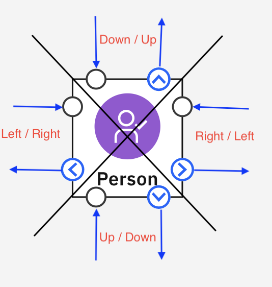

Node Customization¶
Node appearance and behavior can be customized using:
- Setting Canvas Config fields specific to nodes
- Customizing Layout Fields (see below)
- Customizing node colors and styles with CSS (see below)
Customizing Layout fields¶
Node layout fields¶
Node layout properties define how all the elements of a node are displayed such as: the position and size of the icon image; the position of the main label; even the shape of the node itself.
There are two possible sets of node layout properties provided by Common Canvas, these are controlled by the enableNodeFormatType canvas configuration property which can be set to either “Horizontal” or “Vertical”.
Default values for node layout properties¶
The possible node layout properties are shown below with the values they have when enableNodeFormatType = "Horizontal". You can see the values for both sets of properties by looking at the layout-dimensions.js program
Default node layout fields for Horizontal node format
// Default node sizes. These dimensions might be overridden for nodes that have
// more ports than will fit in the default size if inputPortAutoPosition is.
// set to true and outputPortAutoPosition is set to true. (See below).
defaultNodeWidth: 160,
defaultNodeHeight: 40,
// A space separated list of classes that will be added to the group <g>
// DOM element for the node.
className: "",
// Displays the node outline shape underneath the image and label.
nodeShapeDisplay: true,
// Default node shape. Can be "rectangle" or "port-arcs". Used when nodeOutlineDisplay is true.
nodeShape: "port-arcs",
// An SVG path or a function that returns an SVG path. The paths define the node
// shape and its selection highlighting respectively. If set to null, the paths
// will be set by default based on the nodeShape setting.
// If these fields are set to functions they will be called in real-time as the node
// is being sized (provided enableResizableNodes config field is set to true).
bodyPath: null,
selectionPath: null,
// Displays the external object specified, as the body of the node
nodeExternalObject: false,
// Display image
imageDisplay: true,
// Image dimensions
imageWidth: 26,
imageHeight: 26,
// Image position
imagePosition: "topLeft",
imagePosX: 6,
imagePosY: 7,
// Display label
labelDisplay: true,
// Label dimensions
labelWidth: 112,
labelHeight: 19,
// Label position
labelPosition: "topLeft",
labelPosX: 36,
labelPosY: 12,
// Label appearance
labelEditable: false,
labelAlign: "left", // can be "left" or "center"
labelSingleLine: true, // false allow multi-line labels
labelOutline: false,
labelMaxCharacters: null, // null allows unlimited characters
labelAllowReturnKey: false, // true allows line feed to be inserted into label, "save" to make the return key save the label.
// An array of decorations to be applied to the node. For details see:
// https://elyra-ai.github.io/canvas/03.04.01-decorations/
// These are added to the node at run time and will not be saved into
// the pipeline flow.
decorations: [],
// Positions and dimensions for 9 enumerated default decorator positions.
// decoratorWidth and decoratorHeight are the dimensions of the outline
// rectangle and decoratorPadding is the padding for the image within the
// outline rectangle.
decoratorTopY: 2,
decoratorMiddleY: -8,
decoratorBottomY: -18,
decoratorLeftX: 2,
decoratorCenterX: -8,
decoratorRightX: -30,
// Width, height and padding for image decorators
decoratorWidth: 16,
decoratorHeight: 16,
decoratorPadding: 2,
// Width and height for label decorators
decoratorLabelWidth: 80,
decoratorLabelHeight: 30,
// Display drop shadow under and round the nodes
dropShadow: true,
// The gap between a node and its selection highlight rectangle
nodeHighlightGap: 1,
// The size of the node sizing area that extends around the node, over
// which the mouse pointer will change to the sizing arrows.
nodeSizingArea: 10,
// Error indicator dimensions
errorPosition: "topLeft",
errorXPos: 24,
errorYPos: 5,
errorWidth: 10.5,
errorHeight: 10.5,
// When sizing a supernode this decides the size of the corner area for
// diagonal sizing.
nodeCornerResizeArea: 10,
// What point to draw the data links from and to when enableLinkType is set
// to "Straight" and enableLinkMethod is set to "Freeform".
// Possible values are "image_center" or "node_center".
drawNodeLinkLineFromTo: "node_center",
// What point to draw the comment to node link line to. Possible values
// are "image_center" or "node_center".
drawCommentLinkLineTo: "node_center",
// This is the size of the horizontal line protruding from the
// port on the source node when drawing an elbow or straight connection line.
minInitialLine: 30,
// For the elbow connection type with nodes with multiple output ports,
// this is used to increment the minInitialLine so that connection lines
// do not overlap each other when they turn up or down after the elbow.
minInitialLineIncrement: 8,
// This is the minimum size of the horizontal line entering the
// target port on the target node when drawing an Elbow connection line.
minFinalLine: 30,
// Display input ports.
inputPortDisplay: true,
// Object for input port can be "circle" or "image".
inputPortObject: "circle",
// If input port object is "image" use this image.
inputPortImage: "",
// If input port dimensions for "image".
inputPortWidth: 12,
inputPortHeight: 12,
// Indicates whether multiple input ports should be automatically
// positioned (true) or positioned based on the contents of
// inputPortPositions array (false).
inputPortAutoPosition: true,
// An array of input port positions. Each element is structured like
// this: { x_pos: 5, y_pos: 10, pos: "topLeft" }. x_pos and y_pos are
// offsets from the pos point on the node.
// The order of the elements corresponds to the order of ports in the
// inputs array for the node.
inputPortPositions: [
{ x_pos: 0, y_pos: 20, pos: "topLeft" }
],
// The 'guide' is the object drawn at the mouse position as a new line
// is being dragged outwards.
// Object for input port guide can be "circle" or "image".
inputPortGuideObject: "circle",
// If input port guide object is "image" use this image.
inputPortGuideImage: "",
// Display output ports.
outputPortDisplay: true,
// Object for output port can be "circle" or "image".
outputPortObject: "circle",
// If output port object is "image" use this image.
outputPortImage: "",
// Output port dimensions for "image".
outputPortWidth: 12,
outputPortHeight: 12,
// Indicates whether multiple output ports should be automatically
// positioned (true) or positioned based on the contents of
// outputPortPositions array (false).
outputPortAutoPosition: true,
// An array of output port positions. Each element is structured like
// this: { x_pos: 5, y_pos: 10, pos: "topRight" }. x_pos and y_pos are
// offsets from the pos point on the node.
// The order of the elements corresponds to the order of ports in the
// outputs array for the node.
outputPortPositions: [
{ x_pos: 0, y_pos: 20, pos: "topRight" }
],
// The 'guide' is the object drawn at the mouse position as a new line
// is being dragged outwards.
// Object for output port guide can be "circle" or "image".
outputPortGuideObject: "circle",
// If output port guide object is "image" use this image.
outputPortGuideImage: "",
// Automatically increases the node size to accommodate its ports so both
// input and output ports can be shown within the dimensions of
// the node.
autoSizeNode: true,
// Radius of the either the input or output ports when they are set to "circle"
portRadius: 3,
// Size of an offset above and below the set of port arcs.
portArcOffset: 3,
// Radius of an imaginary circle around the port. This controls the
// spacing of ports and the size of port arcs when nodeShape is set to
// port-arcs.
portArcRadius: 6,
// Spacing between the port arcs around the ports.
portArcSpacing: 3,
// Position of the context toolbar realtive to the node. Some adjustment
// will be made to account for the width of the toolbar.
contextToolbarPosition: "topRight",
// Display of vertical ellipsis to show context menu
ellipsisDisplay: true,
ellipsisPosition: "topLeft",
ellipsisWidth: 10,
ellipsisHeight: 22,
ellipsisPosX: 145,
ellipsisPosY: 9,
ellipsisHoverAreaPadding: 2
Node Element positioning¶
Node elements are positioned on the node as an x/y offset from one of nine positions:
The default for most elements is topLeft. The position is useful when nodes are resizable because, as a node is resized, the element will remain tied to its position. So if, for example, an element is tied to topRight and the node is resized to be wider the element will move to remain at the same offset from the topRight position.
The PosX and PosY properties for each element is an offset from the associated anchor position where PosX is the number of pixels to the right of the anchor position and PosY is a number of pixels down from the anchor position. Negative values can be provided to specify an offset to the left and up from the anchor position.
For example, these settings:
{
imagePosition: "middleCenter",
imagePosX: -10,
imagePosY: -10,
imageWidth: 20,
imageHeight: 20
}
};

Overriding the node layout properties for all nodes¶
If you want to change the appearance of all nodes on your canvas you can specify the enableNodeLayout configuration parameter in the canvas configuration object. The properties from this object will replace any properties in the default set, which was chosen based on the settings of enableNodeFormatType. So you don’t need to provide all of the properties; just the ones you want to replace.
Let’s say you want your nodes to be displayed as ellipses. You could provide the following settings in enableNodeLayout in the canvas config:
const canvasConfig = {
enableNodeLayout: {
bodyPath: " M 0 30 Q 0 0 60 0 Q 120 0 120 30 Q 120 60 60 60 Q 0 60 0 30 Z",
selectionPath: "M -5 30 Q -5 -5 60 -5 Q 125 -5 125 30 Q 125 65 60 65 Q -5 65 -5 30 Z",
defaultNodeWidth: 120,
defaultNodeHeight: 60,
imageWidth: 30,
imageHeight: 30,
imagePosX: 20,
imagePosY: 10,
labelEditable: true,
labelPosX: 60,
labelPosY: 37,
labelWidth: 90,
labelHeight: 17, // Should match the font size specified in CSS + padding
ellipsisDisplay: true,
ellipsisPosX: 100,
ellipsisPosY: 20,
portPosY: 30
}
};
Overriding the node layout fields for individual nodes or groups of nodes¶
If you want each node, or category of nodes, to have a different layout based on some criteria you can use the layoutHandler callback method. When you specify this callback method to Common Canvas, it will be called for each node on the canvas, during initialization and, occasionally, at other times.
The method should return a simple JavaScript object that contains any node layout properties you want to override from the defaults and the ones specified in the enableNodeLayout field in the canvas config.
Info
There are three levels of properties provided where each overrides the previous set:
- First Common Canvas takes the full default set of node layout fields based on the value for
enableNodeFormatType. - Next Common Canvas overrides these with the fields from the
enableNodeLayoutobject in the canvas config, if any are provided. - Finally, Common Canvas overrides the combined set with any fields from the object returned from the
layoutHandlermethod if one is specified, for the node in question.
The callback is provided with a data parameter which is the node object from the pipelineFlow so your code can examine the node object and return node layout properties as appropriate.
Tip
The layoutHandler callback is called while the canvas is being displayed, therefore it must return very quickly each time it is called otherwise your canvas display speed will be slowed down.
Here is a simple example of a layoutHandler callback method which will override the width of the node based on the width of the main label for any node where the node’s op field is set to Sort:
layoutHandler(data) {
let customNodeLayout = {};
if (data.op === "Sort") {
const labLen = data.label ? data.label.length : 0;
const width = (labLen * 9) + 30; // Allow 9 pixels for each character and a bit extra for padding
customNodeLayout = {
defaultNodeWidth: width // Override default width with calculated width
};
}
return customNodeLayout;
Overriding port positions and link directions¶
The four options for enableLinkDirection in the canvas config are “LeftRight”, “RightLeft”, “TopBottom” and “BottomTop”. These will control the default position of the input and output ports at the boundaries of the nodes as follows:
- For “LeftRight” input ports will be on the left of the node and output ports will be on the right of the node
- For “RightLeft” input ports will be on the right of the node and output ports will be on the left of the node
- For “TopBottom” input ports will be on the top of the node and output ports will be on the bottom of the node
- For “BottomTop” input ports will be on the bottom of the node and output ports will be on the top of the node
The application can customize these port default positions using the enableNodeLayout object in the canvas config. This object has these fields for port placement customization:
inputPortAutoPositionandinputPortPositionsto customize input ports andoutputPortAutoPositionandoutputPortPositionsto customize output ports.
So for example, the following settings:
const config = {
enableNodeLayout: {
inputPortAutoPosition: false,
inputPortPositions: [
{ x_pos: 0, y_pos: 5, pos: "topLeft" },
{ x_pos: 0, y_pos: -5, pos: "bottomLeft" }
]
}
};
will position the input ports like this:
If nodes are set to be resizeable (enableResizableNodes set to true) and the nodes is resized it will look like this, because the second port is tied to the “bottomLeft” position:
When ports are positioned on the node, regardless of whether they are positioned by default or have customized positions, they are assigned one of four ‘directions’ that links will be drawn to/from. These directions are dependent on the diagonal quadrant of the node the port is positioned within.
As an extreme example, if these fields are used to customize a node with four input ports (black circles) and four output ports (blue arrows) like this:
Common Canvas will assign a direction to the input and output ports are follows:

If the config field enableLinkMethod is set to “Ports”, and enableLinkType is set to “Curve”, the links will be drawn as follows:
This means an application like the one shown below can be built, where the links exit from the left of the ‘Inp_1’ node and point to the ‘Stage Variables’ node below it. Meanwhile, other links exist the ‘Inp_1’ node on its right and point to the ‘Out_2’ node. This is achieved by positioning some (invisible) output nodes on the left of ‘Inp_1’ and some on the right of ‘Inp_1’. Common Canvas takes care of drawing the links in the appropriate direction based on the port positions.
Node Images¶
For most flows, nodes are defined with an image (icon) that conveys the purpose of the node. They are displayed for the nodes in the flow and the palette. The nodes image can be provided as a URL or JSX object. Images can also be customized using node layout fields.
Node image layout fields¶
The following fields can be set in the node layout to customize images within a node:
// Display image
imageDisplay: true,
// Image dimensions
imageWidth: 26,
imageHeight: 26,
// Image position
imagePosition: "topLeft",
imagePosX: 6,
imagePosY: 7,
Node image as a URL¶
Typically, the image field of a node object in the pipeline flow (or palette) is a URL that references an image file on the server. This can be any type of image that can be displayed in an <image> tag however, if the file is recognized as an SVG file by having the .svg extension, the contents of the file will be loaded as inline SVG in the DOM. This allows more image customization using CSS.
The loading and management of images can be controlled using the enableImageDisplay canvas config field.
Data URLs
Data URLs can be used to embed an image file within the pipeline flow JSON however, this is not recommended for production use since it leads to bloated pipeline flow files because of the amount of data stored for each image and the repetition of images across multiple nodes of the same type.
Alternative palette image
The node definition contains a palette image field which, if specified, will be displayed as the node’s image only on the palette.
Node image as JSX¶
Images can also be provided to Common Canvas as JSX objects. This means, for example, that the application can provide Carbon icons as node images in the palette and on the canvas. Since JSX objects cannot be stringified, the application must programmatically set the node image field to reference the appropriate JSX object.
Also, when data is retrieved from Common Canvas using either canvasController.getPipelineFlow() or canvasController.getPaletteData(), the returned node object will not contain any image information.
The node image can be set something like this (where “123” is the node Id):
import { JoinInner } from @carbon/react/icons:
...
...
canvasController.setNodeProperties("123", { image: (<JoinInner size={20} />) });
Size prop
Note, the size prop is used when the icon is displayed in the palette however for a node in the flow the icon will be sized based on the imageHeight and imageWidth fields in the nodeLayout object specified in the enableNodeLayout field of the canvas config object.
Also, when nodes are pasted into the canvas the application will need to ensure the image fields of those nodes are set appropriately.
A new sample application called JSX Icons has been added to the test harness to show Carbon icons being used as node images.
Customizing node colors and styles with CSS¶
Node DOM Construction¶
Node elements are drawn as SVG elements in the SVG area provided by the Flow Editor and are grouped together using a group <g> element.
The DOM elements that make up a node can be customized using CSS styles. This is done by either overriding the common-canvas CSS directly or, if customization is needed on a node-by-node basis, by assigning a class name to the group <g> element that is the container for all the node elements. The class can be applied to the group object in a number of different ways:
- By specifying it in the
app_data.ui_data.class_namefield of the node in the pipeline flow document that is provided to Common Canvas usingCanvasController.setPipelineFlow(pFlow) - By specifying it using the following API methods:
- CanvasController.setNodeProperties(nodeId, properties, pipelineId)
- CanvasController.setNodesClassName(nodeIds, newClassName, pipelineId)
- By specifying a class name in the
classNamefield of the node layout properties in the canvas config. Like thisconst canvasConfig = { enableNodeLayout: { className: "my-node-class" } }; - By specifying a class name in the
classNamefield of the node layout properties returned from thelayoutHandler.
You can see the svg-canvas-d3.scss file for full details about what elements in the node can be styled but here are a list of some basic parts of the node:
Classes¶
| Purpose | DOM tag | Classes | Notes |
|---|---|---|---|
| Group | g | d3-node-group | Classes specified for the node in the class_name field of the node object will be added here. |
| Selection area | path | d3-node-selection-highlight | |
| Outline shape | path | d3-node-body-outline | |
| Image | svg | d3-node-image | |
| Label | foreignObject | d3-foreign-object-node-label | Will contain a div that contains the label text |
| Input port | g | d3-node-port-input | |
| Output port | g | d3-node-port-output | |
| Decorations | g | d3-node-decorations-group | Will contain decoration elements, for example, image, path etc |
So for example if you want the node body (the rectangle) to be colored orange you would provide a class name to the group element using one of the techniques mentioned above and then put this in you CSS:
.my-node-class .d3-node-body-outline {
fill: orange;
}
enableParentClass canvas config field to make you CSS rulesets specific so your styles are picked up in preference to the common-canvas default styles.